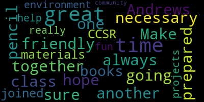

[Downs]: Good evening, welcome to the Andrews virtual open house. I apologize for the delay. As you know, we are trying to work our way through a new technology to do the virtual open house. So I thank you for your patience. I know many of you are excited to come to the Andrews and we are excited to have you as well. So before I begin the presentation for tonight, I just want to say a few thank yous to some special people who have helped me prepare for this. First of all, Dr. Peter Cushing, who is working behind the scenes tonight for our broadcast. Dr. Marice Edouard-Vincent for helping me make the video. miss sarah grant who also put a video together with staff and students that you will see later on miss abramian for her help with the national junior honor society miss bandoian and the ccs are and then tonight we have some panelists of some teachers and guidance Councilors and the assistant principal of the Andrews. We have Mr. D. Clemente from 6A. We have Ms. Bruce from 6B. We have Ms. Santos who is our guidance Councilor for the A side. We have Mr. Maidment who is part of our exploratory team and teaches physical education and our assistant principal, Ms. Julia McEwen. I also want to thank Mr. Jack Dempsey who produced the opening video that you will see in some time. I also wanna thank the assistant superintendent, Ms. Diane Caldwell, the Andrews teachers, Ms. Johnson, my secretary, and of course the custodians. As you will see in the video, our building is very clean day in and day out. And of course we couldn't do any of this without the help and the support of the Medford Public Schools School Committee. So just before we start, I want to share with you the core values of the Andrews Middle School. The core values of the Andrews Middle School is excellence, the responsibility and respect. that will be posted throughout the building, and it's something that you will hear. It's also in our handbook that you will receive this summer. Again, excellence through responsibility and respect. We expect our students to try to do their best in school and out of school. We ask that they be responsible. And of course, we always want them to show respect, not only to the teachers, but their peers, themselves, and of course, those at home who take care of them each and every day. So as you see me sitting in my home studio, I use that term loosely, studio, you will see behind me, if you may, is a picture. That picture represents my 20 years of military service. So that is something that is unique for me as an administrator in public schools, as I am a retired captain of the United States Air Force. And so you will see that in my office. And oftentimes, you'll notice that my hair is much shorter than it is right now. But we do our best. So before I keep continuing with that, I do want to start with a video that will show you around the Andrews. Because I know many of you sixth graders are very excited to see what the Andrews looks like on the inside.
[Clerk]: So here comes the video.
[Edouard-Vincent]: Hello everyone. I'm the superintendent of schools Dr. Edouard-Vincent and I welcome all of you to the Andrews Middle School. This is a wonderful school and right now I am standing in front of the portrait of the namesake Miss Madeline Duggar Andrews. She was the first African-American elected official in Medford. And by chance, I am the first African-American superintendent of schools for Medford Public Schools. I'm so happy to be here today and share this orientation with you. You're going to have a lot of wonderful things happening here at the Andrew School, a lot to learn, excited teachers. And as you go on this virtual tour, you're going to be excited about coming here next year. Thank you.
[Downs]: Welcome to the Andrews. My name is Mike Downs. I'm the principal here. Come on in. Now that you're inside the building, right over here is the main office. The other place that you might need to come to in the morning is over here to our cafetorium and to over here into our gym. Welcome to our gym. As you saw, we have a sign that says, Andrews, excellence through responsibility and respect. So come on into our gym. Here in the morning, you can hang out in here and you can shoot baskets or just hang out with your friends. But we also have some great PE classes that go on here. And as you can see, we play hard, we play fair, we play safe. Additionally, we are also part of the GBL, and this is where you'll have your home basketball games, which this year were fantastic. Both our boys and our girls made it to the finals this year. Additionally, this is where we have some of our after school activities. The favorite one that everybody loves at the Andrews is Mr. Zizzo's dodgeball. There's more activities than that, of course, but that is the number one club that we do have here at the Andrews. So welcome to our gymnasium. Now let's go to our cafeteria. Welcome to our cafeteria. Here is where you would come in the morning as well. One of the great things about Medford Public Schools is that we offer free breakfast. So when you come to school, make sure you take advantage of our breakfast, but also remember to pick up after yourself. Also, this is where you're gonna have your lunch. And when we have great presentations throughout the year, you'll come in here and our presenters will be up here on the stage. This is our cafeteria, again, It's a great space, not only for food and for presentations, but a lot of students like to hang out here after school and do work together. Remember, always do your schoolwork whenever you can. In the morning, when the bell rings, what happens is you either leave the couch or the gym and you go to your side or your team, which is straight this way. A side will be up here. and B side will be over there. Remember, you're on either A side or B side in the sixth grade, and you're on the third floor. Again, this is our main stairway when you go up to your classes for sixth grade. This is the only stairway that we use here at the Andrews, but just to give you a layout of the building, on this side is eighth grade classrooms, and same for over here. However, we have some other things on this side that you may want to be aware of. For instance, our elevator is right here. And then we have our tech lab. Tech lab is part of our exploratory rotation. It's a great class. Almost every student loves it. So come on this way. Welcome to our Tech Lab. As you can tell, there's lots of things that go on here. For instance, you can make rockets. You can use woodworking materials. We also have computers. Basically, Tech Lab has science and technology and engineering. It is for every student of every kind with every interest for our building. Let me show you some of the examples of some of the things that they build in Tech Lab. Here's some great examples. For instance, some rockets are down here. some bridges, which not only are they beautiful to look at, but there's also some engineering applications. And over here, we have some more bridges. One of the best products that we do this year is we do this with the popsicle sticks. And you have to make a bridge with popsicle sticks and see how much weight it can hold. So again, that's one of the favorite projects during the year, and welcome to technology. So I just left the cafeteria or the gymnasium. And right across the hall from the technology lab is our nurse's office. If for some reason you're not feeling well or you have some medications that need to be dropped off, please bring them to our nurse. Hi, now I'd like to show you some of our outdoor facilities that we have here at the Andrews. As you can tell, we have this ginormous, that's one of the terms that students here like to use, outdoor play area. This area is for our recess, for our physical education classes, we do soccer out here, we have running out here, our cross-country practice is out here. Again, look at how great this space is for us. We have over here, we have a softball field, and a little further over, we have a baseball field. Again, those are utilized by our physical education classes. And right around the corner, in front of the school, is our basketball court. So one of the great things about when you come to the Andrews is these outdoor facilities that we're able to offer you. As I mentioned earlier, we have a great basketball court in not only our physical education classes, but also for recess on those days when it's raining a little bit or there's snow on the ground. Again, I want to also show you our baseball field right over here. And then right over there is our softball field. Again, this is part of our great athletic complex that we offer here at the end. So now we are on the second floor. To my right is the A side for grade seven. To my left is the B side for seventh grade. However, even as a sixth grader, you have some great opportunities here at the Andrews on the second floor. Come, I'll show you. Welcome to our band and orchestra room. We are so fortunate here at the Andrews to have outstanding teachers, Ms. Chang and Ms. Baptiste. They are both great teachers and both our band and our orchestra perform during the year and they are absolutely fantastic. This is room 202 of the Andrews. We have our talent show each year. which highlights the great talents of many of our students. We have our musical every year. This is done by Miss Grant, whose room you'll see soon. This musical that she puts on every year is absolutely fantastic. Here's some more examples of our other talent show we had. And over here, we like to highlight student work throughout the year. Now we're gonna visit Miss Grant's room, room 204. She is our music teacher as part of our exploratory class. This is Ms. Grant's room again. Look behind me and you'll see several types of instruments. While in this exploratory, you're not only going to learn how to read music and play different instruments, but the most important part of this music class will teach you the Andrews song. So by the end of your sixth grade year, I expect you to know the song by heart. Welcome to our library. So this space is a great space for all students. You can come here in the morning before school. Thank you to Miss Williams. You can come here during lunch. You just have to get a pass from your teacher. And you can even come here after school. We have a collaboration space over here. We have computers for you to do research. We have breakout spaces for you. to read books that you may never have heard of before. But remember, the key is that you read each and every day. When I walk into your English class, I will ask you, what book are you currently reading other than your English book? And I expect something of an answer from you. Part of your exploratory blocks is foreign language. For instance, right now, we are in a Spanish room. We also offer Italian. And so I hope that while you're at the Andrews, you'll take advantage of this great opportunity. So now we are in a science room. Actually, we're in Mr. Prowson's science room. Now he won't be one of your teachers next year, but as you can tell, this is a great place to learn. One of the things that Mr. Prowson has is a Chromebook cart in his room. Here at the Andrews, we have nine Chromebook carts, one for each team and three for anyone else that may need one on that particular day. I'm very proud of the fact that we have nine Chromebook carts to support teaching and learning through the use of technology. And you can see Mr. Carlson has a lot going on here. He has a water experiment over there. He's got all kinds of science equipment. He's got a grinder for homework. And just to give you a highlight of his science at the Andrews. Welcome to Miss Pousa's room. She is one of the sixth grade teachers on Aside for English, and today I'm sitting in one of her director chairs. As you can tell, Mrs. Booth has lots of student work on her walls. Again, this is Mrs. Booth's English class.
[Ruseau]: Here we go.
[Downs]: The next classroom we're going to visit is Mr. Gallagher's art class. Here are some examples. of some of the work that students have done in the years past. Welcome to Mr. Gallagher's art room. Come on in. You can see some of the activities that he does and some of his beliefs when it comes to art. Observe, envision, engage, explore, craft, express, reflect, and understand. Here's some examples of student work here at the Andrews, including, of course, our art way as you walk in. So earlier, I mentioned that we have nine Chromebook carts. Seven of them are less than a year old. But we also have a great computer lab where Ms. Coralie Bacon will teach you everything from coding and basic technology using the computer. The computers that you see here today are brand new. We just got these computers about two months ago, and they are here for you when you come to the Andrews. The nurse's office, their office and Ms. St. Phyllis is right here. They are here to help you during your time at the ambulance. Thank you. Thank you for your time and watching that video. Thank you again, Mr. Dempsey for producing that for us. I know it lagged a little bit, but if you couldn't hear part of it or you want to see it again, we will post that video on our website very soon after this or by tomorrow. So let's just go back to some of the things about the Andrews, just as a highlight of some of the things that we do. One of the things that we have, of course, as I mentioned in the video, we have two sides. We have A side and B side. For all you students that are coming here next year, just know that both sides have some fantastic teachers in them, and you have nothing to worry about whatever side you end up on. We do have nine Chromebook carts, as mentioned in there, with an updated computer lab. One of the things that we also have at the Andrews that's one of the best parts of my job is periodically we have a student of the month breakfast. I have to publicly thank Ms. Santos and Mr. Lynch, as they are the ones that organize the breakfast when we have it. So part of doing the best that you can is that if you do the best you can and you show excellence through responsibility and respect, maybe your team or the exploratory teachers will nominate you for student of the month. Additionally, we have several clubs and activities. One of the great parts about being at the Andrews is the number of activities that we have. We have middle school sports. I want to thank Mr. Bobby Maloney from the high school and Ms. Rachel Perry, the athletic directors. They really got the ball rolling this year. And we have a sports in the fall, the winter, and the spring. We also have several clubs for anyone that has several kinds of interests. For instance, we have the Builders Club, Diversity Club, Environmental Club, we have a GSA here, we have a soccer club. We are lucky enough to have the Boston Shakespeare Club. It's a club that is sponsored by an outside vendor and they do a great job with our students. We have dodgeball, we have movie club, plus many more. Additionally, we also share clubs with the McGlynn. So one of the great things is if you're a little nervous that some of your friends are not coming to the Andrews, I can tell you there are going to be plenty of opportunities for you to see your friends through these clubs and these activities. So again, we have wonderful opportunities for many people. What I want to do now is I'm going to share my screen with you, and I want to show you what your schedule will look like, not as individuals, but what they typically look like for most students.
[Clerk]: So bear with me here. So this
[Downs]: is what a student schedule will look like here. As you can see, during the first block, you'll have an academic class. And then, during the second and the last block of the day, you're going to have your exploratories. The exploratories vary from student to student, such as band, orchestra, Spanish, Italian, physical education, health, all kinds of great opportunities. For sixth graders, you will eat lunch the fifth block of the day. And then for some of you, you may have already noticed on the third block on Wednesday, you will see it says W-I-N-N, and that stands for what I need now. During this time, your teachers will provide opportunities for you to do many different things. And sometimes that's when we have our presentations. So again, this is just a sample of what a sixth grade schedule will look like. Thank you. Next, we have a parent fact sheet. Now, this parent fact sheet is something that the faculty and some parents came up with for you parents and even students out there, some of the questions you may have. So what I'm going to do is I'm going to share this again with you.
[Clerk]: Again, please bear with me for just one second.
[Downs]: So this is something that will go out in August to all the families. But one of the biggest things, as you get into middle school, you need to be self-advocating for yourself. And of course, your parents will want to check on your progress in your grades. That is done through School Brains. Before school starts, make sure you know your School Brains account and your password. If for some reason you need to be dismissed or you are absent, this is the main line to the Andrews Middle School. It is posted on the website. Please know for you parents and guardians out there that in order for you to sign out your student, you must check in with a security officer at the front door and you must show an ID and you must physically sign that student out for that time. For meetings, middle school works a little different than the elementary schools. Our two guidance Councilors, Ms. Santos and Mr. Lynch, are the people that you want to reach out and if you want to meet with a team. Now, I've given you some meeting times here, but please note that although these are the times of the day that they are typically available, Not all the days they can meet. They have several other obligations during the week that may preclude them from meeting during a time and a day that you may wish. Again, we do our very best at the Andrews and please reach out to Mr. Lynch or Ms. Santos if you wish to arrange a team meeting with the team. If your son or daughter or student needs to see a specialist, please communicate that directly to that specialist. We have some great events throughout the year through the PTO. I will go back to the PTO at the end of this presentation. Remember, please help out our PTO. Our PTO does so much for us. We can't thank them enough for all the generous support they have shown us over the years. As a reminder, all forms given out during homeroom and during the year will be posted on our website under Andrews Middle School information. This will be done around August, so please check back in later. We are not sure who our ETL is going to be, for those of you who have students who receive special education services. However, that information will go out as soon as we know. A key for grades in the honor roll, of course, it's in the handbook. Please check the teacher and teacher websites for homework assignments. And for those of you who have gotten used to distance learning, many of the teachers at the Andrews already had Google Classroom. And so hopefully by now with this distant learning plan, you are able to go onto Google Classroom and check your work every day. Please check the website for bus information, especially the late buses which will run from Tuesday to Thursday around 3 o'clock 15 on once about September usually. Information on progress reports and report cards can also be found on our website. And before school starts, please check your students bus route and bus number. One of the expectations we have is that when you show up on the first day of school, you know your bus route and your bus number. Please do not wait to school starting to find that out, even if you Not sure your student will take the bus, please know your bus information. And the school provide lockers and locks on the first day of school, so please do not use a non-school lock. We ask that you don't do this in case, of course, you forget your combination and then that way we can help you out. One more thing I'd like to touch upon before we open it up for questions is our PTO. And this slide, I'm gonna share a slide with you again to show what the PTO does for us and all the different activities that we have because of the PTO.
[Clerk]: So the PTO,
[Downs]: runs our school dances, they run our dodgeball tournament, they catalog fundraisers, they have restaurant fundraisers. This year, we were hoping to have a Wizards basketball game, but unfortunately that was postponed and or canceled. Every year we do the Jingle Bell run and walk. We also, they support our staff. They've, in the last few years, they have been able to support two Chromebooks carts for the entire school. Again, please join their face group page and also you can email them at ptoandrews at gmail.com. Again, they need your help and your support, both financially and with time. Please be involved in our PTO. As I said, they do wonderful work for us here at the Andrews. Okay, at this time, I want to bring in my panelists. I'm very lucky to have some great panelists with us tonight. We have Ms. McEwen, the assistant principal, Mr. Maidment. Give them a wave, please. And right now we have Ms. Santos as well. Ms. Santos is our guidance Councilor. And Mr. D. Clemente from 6A. And maybe Ms. Boots is somewhere in the background. I'm not 100% sure, but she might be there somewhere. So now we'd like to open up for questions for you, and we'll do our best to answer them. One of the questions, guys, I think was already answered was about what sports we have in the fall. Right now, we have, Mr. Maidment, would you wanna answer that, please?
[Reginald Maidment]: So we have cross country is one of our intramurals that we run. And then in the winter is boys and girls basketball. And those are our three intramurals that we have so far. It was our first year. Next year, we potentially could have more.
[Downs]: Thank you, Mr. Maidment. One of the questions was about football, and as we said, we do not have football. That is not something that we have. And any other questions? Does anybody else see any questions that we have from the live audience? I don't see any. Do you guys see any by any chance? No?
[Reginald Maidment]: I don't see any.
[Downs]: Nope. All right. Well, Without further ado, I do thank my panelists for showing up tonight. I appreciate your time and your patience and waiting for your moment in the sun. So sixth grade families, here are some of the people that you will see in the fall. Again, Mr. D. Clemente from 6A, Ms. Santos, who's the guidance Councilor for 6A, Mr. Maidment, our physical education teacher extraordinaire and Ms. Julia McEwen, our assistant principal. Thank you all for showing up. Thank you for your time. I do appreciate it.
[Peter Cushing]: Mr. Downs, can I just ask the panelists a quick question? What would be their one piece of advice to the sixth graders coming in for a successful transition to middle school. We have really experienced middle school teachers. What would be your one piece of advice for them to come in? And then all of the people who are online looking at Facebook or anything like that, or Facebook or YouTube, put your questions in the comment line and we can put them up on screen so that they can be answered. And now the man behind the curtain is going back. So go ahead, Mr. Bateman.
[Reginald Maidment]: I think the first thing is that the incoming sixth graders, for a smooth transition, don't be afraid to ask for help. Ask for questions. We're all here for you. Again, ask us. If you don't know where something is, if you don't know who somebody is, ask us. We have no problem helping anyone out at any moment for any questions.
[Yvonne Dwojeski-Santos]: I think even for that first day and that first week, everybody can be a little bit nervous. And I, I, I'm a little bit nervous in that first day. I know people that have been, even teachers who have been teaching for 20 years get nervous. So you're not alone. Incoming sixth graders, you're going to see teachers in the hallway. That first day can be really overwhelming and kind of just like a little crazy. So definitely just ask one of the teachers, guidance Councilors, Ms. McEwen and Mr. Downs, who's definitely going to be in the hallway. and we'll get you through that first day in that first week for sure.
[Downs]: Mr. DiClemente.
[Michael DiClemente]: Yeah, excuse me, I would say there's plenty of opportunity to try something new. I know in the video, the opening video we had, there's clubs, the dodgeball club Mr. Zizo runs is huge. There's a soccer club, there's book club, movie club, language clubs, try something new. And I know a couple of parents, it looks like, are asking about what side they'll be on. We work collaboratively, so we reach out between A and B. So sides are not necessarily important. We work together as a huge sixth grade team to make sure everything's running smoothly for everybody. So it's a great opportunity to try something new and meet new people.
[Downs]: Thank you, man. How about you, Mr. McEwen?
[McEwen]: Well, number one, I think, make sure that you use the agenda that gets given out at the beginning of the school year. Make sure you are keeping track. You guys are going to be going to lots of different classes, lots of different classrooms, and your teachers are going to be giving you different assignments, and it's going to be your responsibility to keep track of those. When I say it's going to be your responsibility, we're going to help you with that big time. But that agenda is going to be, you need to make it your new best friend when you show up for sixth grade. And Mr. DiClemente, I know, is going to make sure that you get very well acquainted with that. But make sure that you're keeping track of assignments, moving around from room to room, going to different floors. There's a lot to keep track of, and it might feel a little bit overwhelming. And like everybody else on the panel said, we're here to help you with that. But one of the ways that you can help yourself is to keep track of that agenda. Make sure you're writing down what you need to do.
[Downs]: Excellent. Thank you, Ms. McEwen. My piece of advice is, like some of the teachers have already said, just ask. You know, if you're not really sure what to do or, you know, who to go see or whatever, just ask an adult in the building. Every adult at the Andrews, as you will find out, is there to help every student every day. So whether you, if they're your teacher or not, please just go up to an adult and ask. We find that sometimes students don't do what they're supposed to, because they didn't know, because they didn't ask. So again, ask any adult in the building. They will help you out all the time. One of the questions that popped up when we were talking was, is there an art club? Yes, there is. That is with Mr. Gallagher after school. And the other question was, how many classes a day do students have? Well, we have an eight-block schedule. And what that means is that we have eight classes a day, but one of those is lunch, two are for exploratory, and the rest are for our academic blocks. Our classes are roughly about 45 minutes long for each one. Somebody has a question. Can twins be in the same class? It's usually done at random, but sometimes it works out that way. And we do have a lot of twins, it seems like. One of the questions is, what is the difference between A side and B side? Can I answer this, Mr. DiClemente?
[Michael DiClemente]: I mean, there is no difference. There's an A and B only because we have more kids that can be accommodated by one team. We work, as I said just a few moments ago, collaboratively. So the ELA, history, math, and science teachers work together. We stay fairly on pace with each other. So, I mean, the only difference is that we need to have the two teams to accommodate the amount of kids that come into the school.
[Downs]: Yep, thank you. And there's no real difference. You know, I said at the beginning, both of our sides are great. We have great teachers on 6A and 6B. And so there really isn't a difference between the two. They're both fantastic. And every year, kids love their side. So that's one of the positives of being at the Andrews.
[Yvonne Dwojeski-Santos]: And just so the incoming sixth graders know that for your exploratory classes, you're all mixed in. So you're not just with A students, if you're on side A, you're not just with B students, you get to, we mix them up. So it's really just a great opportunity to get to know the other kids on the other side in your four exploratories.
[Downs]: Exactly. Thank you so much for that, Ms. Santos. Is there anything else the panel would like to share that might be of use for any of the students or parents listening right now? Go ahead, Mr. DiClemente.
[Michael DiClemente]: Yeah, I just want to say I know the first day of school is often a big point of anxiety when people are coming in. We set it up, and of course, I mean, we can't predict the future, but normally how the first day of school will work, when you come into the physical building, you'll be in either the cafeteria or the gymnasium, as Mr. Downs pointed out in the video we just saw a few moments ago. And the sixth graders will wait in the cafeteria, Mr. Mayment will hold them there. The teachers will come down, the homeroom teachers will come down and get the kids. bring you up to homeroom. We have an extended homeroom. We go over all the procedures that would normally happen, get your locks, make sure everything is all squared away. And then we will do that several times throughout the day. And then the sixth graders will go down early at the end of the day, just go through the end of the day procedure for the whole first week of school to get on the buses they need to do. So I know parents and guardians, adults at home, are nervous to let their kids go. And I understand that. And all of us on the panel have experience with this or have our own children and realize it can be difficult to let the kids go. But we have very strict procedures in place to make sure that the sixth graders get in to their homerooms, go out the day and back to the bus with someone making sure that they know where they're going. And we do that the whole first week of school. The second week of school, it starts to let up a little bit, but the whole first month of school, the sixth grade teams work on all the routines and procedures of the school. We stand out in the hallways to make sure that everyone knows where they are going. So, I mean, you can hopefully rest assured as much as possible that your kids are in good hands and we're there to make sure they know where they're going and they're not overwhelmed.
[Downs]: Thank you, Mr. DiClemente. So some of the questions are there advanced classes for sixth graders? There are no advanced classes. Every student is in the same level of classes in the sixth grade. One of the other questions was, do we teach students to self-advocate for themselves? Ms. Santos, can I give you that question as someone that teaches the guidance classes?
[Yvonne Dwojeski-Santos]: Yeah, so what Mr. Lynch and I, and Mr. Lynch is the other guidance Councilor assigned to side B, and we cover lots of different topics in our guidance classes from how to make new friends, transition from elementary to middle school, how to stay organized, how to deal with stress. And we also talk about, sorry, I lost my train of thought, how to advocate for yourself. And we talk about, we do, role plays and scenarios and it's a lot of group work and so Kids, it's really it can be a very small class so we can do a lot of things together So we definitely cover that and we also are available for one-on-one chats So if anybody wants to come down for a specific situation to talk about with me or mr. Lynch, we're always available Excellent.
[Downs]: Thank you. Ms. McEwen. Could you go over some of the rules at lunchtime while we have them here?
[McEwen]: Absolutely. And also just to echo Ms. Santos, Mr. Downs and I are also always available to help problem solve or help figure something out when things are not going so great. Encounter are also here to help. At lunch, we make sure that things are as safe as possible. Our top priority is that students have enough time to eat and that they're doing so safely. So typically what we do every day is we have two sides of the cafeteria, the stage side, which is the table closest to the stage, and window side, which is the tables closest to the windows. And usually what we do is we send students up to get their lunch one at a time, one side at a time. You guys can choose where you sit in the cafeteria. There's no assigned seating, but we do reserve the right to change that in case things are getting unruly. We did not have to do that this year, so I don't think it'll be an issue, but just so that it's out there right now, we do reserve that right. We send you guys one side at a time up to get your food. It's pretty open. We make announcements at the beginning of lunch. We have a system where when you see an adult's hand go up, that means that your hand goes up as well. And then you turn your sounds off. It works pretty well. It's something that we practice. And then once people are done eating, we clean up. We make sure that we make an announcement to give you a reminder. And then we all head outside and we pretty much head out in all kinds of weather. If it's really raining hard or snowing, we don't go out because we don't want you guys sitting for the rest of the day in wet clothes. But when it's cold, we expect that you bring your jackets to lunch. If it's too cold to go out, we'll make an announcement before lunches and say, don't bring your stuff down. We're staying inside. But that's pretty much how lunch goes. And I know that I'm seeing the question, are there vegan options for lunch? Sometimes, yes. I'm not sure that there's a regular vegan option, though. I think that Mr. Downs, can you confirm that?
[Downs]: Yeah, doing I not on a regular basis. Uh, that's of course left up to the lunch program. So one thing you can count on though, kids is the fact that you will watch Mr. Downs eat his salad every lunch.
[McEwen]: That's every single day. Mr. Downs and I don't tend to take time for lunch for ourselves. So we usually like to. bring our lunch into the lunchroom, sit with you guys, eat with you guys. I think that everybody on this panel can attest to somebody here really eating a lot of Panera every day. So you'll see that happening.
[Downs]: Yeah, exactly. All right. And then, Mr. Maidman, is there anything else you would like to add by any chance?
[Reginald Maidment]: Um, I mean, it says what time does school start? So, uh, I'm usually there around seven 30. The doors are open around seven. Um, a lot of the kids come into the gym before I get there. Uh, the first bell will ring at seven 50. And that's when I will dismiss the, each grade out of the gym. And then they go to their classes and then you have homeroom from seven 50 to eight Oh five at eight Oh five, the bell rings and then you go to your first period.
[Downs]: Excellent. Yep. All right. Anybody else? Do we have any other questions? What time does school start? One of the questions that we have is how do we address the issue of racial diversity and equity? Well, part of being at the Andrews, of course, is excellence, responsibility, respect. we instilled that from day one. Mr. Maidment started on day one saying that to the students and so therefore as a staff we are very cognizant of the different issues and the different diversity that we have in our building and we make sure especially Ms. McEwen and I that those differences are respected and I would say that all the teachers at the Andrews make sure that everybody's differences are respected and welcomed at the Andrews. That's what makes us such a great school no matter You know, whoever you are, wherever you are, it doesn't matter to us. We are here for you and we will take care of you as best we can each and every day. That I can assure you. Any other questions that we have here on the side?
[McEwen]: Mr. Downs, I saw one pop up about how to join clubs or activities. There's usually a club fair in the fall, and you get to walk through the cafeteria, and everyone who runs a club has set up information about their club. And the time commitments really change from club to club. The gay-straight alliance, the GSA, meets every other week, whereas some clubs meet once a week and so it really depends on the club, but you'll have an opportunity and lots of information will go out to you. That's one of the announcements we make at lunch, lots of reminders for how to sign up.
[Downs]: One of the questions is, do we have lunch at the same time as the McGlynn? I honestly, I believe we do, but we will never because we're never there for their lunch. Unless Mr. Tucci wants to come over and do my lunch duty someday. Uh, I'm not really sure about that. Um, one of the great things, uh, again, being so close to the McGlynn is that if your friends go to the McGlynn, you will see them. You will see them at your clubs and your activities. If you're in band or orchestra, you will see them in band and orchestra. If you happen to play a sport. and you make the team, you'll see your friends, if they make the team at those sports. So there's plenty of opportunities. You know, we're right next door to each other. We're both part of Team Medford. We are different schools, but we share very much the same philosophies about schools. And so don't worry about missing your friends. You'll see them plenty of times. Clemente, you had a question or a comment, sir?
[Michael DiClemente]: No, I'm just looking at a question here. Where's my locker and how does it work? As sixth grade teachers, we spend an awful lot of the first day just going over all of that, where your locker is, how the locker works. The school will provide a lock to you. By homeroom and by side, you'll get a locker number that will be yours for the entire year. So those are procedures and routines that we will spend ample amount of time on to make sure you know how all of that works.
[McEwen]: And your locker is gonna be on the hall where your core classes take place. So if you're in Mr. DiClemente's homeroom, your locker is gonna be very close by to that classroom. You're not gonna be going to a different floor or anything like that. It's also, if you're on 6A, your locker is on the A side of the third floor, right near your homeroom.
[Reginald Maidment]: Mr. Maidment. DiClemente, do you wanna bring up the fact that they have scheduled locker time, that they can't always just be going to their locker when they need to?
[Michael DiClemente]: Uh, yeah, we can do that briefly now. And then obviously that's something we'll go over once the schedules come in and we get into school, but, um, it's, it's not a free for all. So as Mr. Mayman mended in the morning, um, at eight 50, you'll be dismissed. Um, the first few days of school will be a little bit different, but basically you'll be dismissed. Come upstairs. You have seven 50 to eight o'clock to go to your lock and get everything you need and go to homeroom. By 8 o'clock, you should be in homeroom. That's when attendance is officially taken. And then 8 to 8.05, you'll do the morning announcements. There will be scheduled time. So it's based off what the schedule is. And Mr. Downs will send those out to you. And then the teachers will make their locker times for you. There'll be at least four or five opportunities to get what you need. But we try to streamline it so you're not spending four or five minutes of class time at your locker. We want to try to maximize the amount of time you're in either your academic class or your exploratory classes. Thank you.
[Downs]: So one of the questions is, can students start their own club? That's a little bit of a tricky one. We have so many clubs between the Andrews and the McGlynn that it's very difficult to start new clubs. New clubs have started in the past, but that's something that is on a case-by-case basis, depending on how many clubs are running and how many students are in those clubs already. So thank you for the question, but that's what we can say for right now.
[Reginald Maidment]: Mr. Downs, one question popped up and went away real quick about IDs. My favorite part of the year. Do you want to bring up the fact that we are expected to wear IDs?
[Downs]: Yes. So every student will get issued an ID. We ask that students have those IDs on them at all times for various reasons. The biggest reason is for safety. If we happen to have to, let's say, do a drill and we need to take a head count, we want to make sure that everybody is who they say they are. That's why we ask students to do their ID. But the other part of your IDs and your ID number or your lunch number, you're going to need to know your lunch number. or your ID number at lunch, and when you go to the library to sign out a book. So please remember your lunch number. Do they have a bus for after school clubs? Yes. On Tuesdays, Wednesdays and Thursdays, the school, the buses will come around 3.15 and it's only three buses. So again, when the first day of school, you know, before school starts, check the late bus schedule and the drops because they are further away than your normal bus route is on the regular bus schedule. Good question though.
[Yvonne Dwojeski-Santos]: And I just wanted to add that all of those bus listings will be posted and teachers will be there to help you out to let you know which bus to take. So I know that can be a little bit overwhelming, but for the incoming sixth graders, you know, we'll be able to help you out on which, which are the three late buses to take.
[Reginald Maidment]: Go ahead, Mr. Maidment. So me, Mr. Downs, Mr. Lynch, the first few weeks we'll be outside with every bus stop that the bus goes to. So if you are questioning, we're outside with the piece of papers that says the corner of this street and that street, remember what street in what stop you got on so that we can then give you the correct bus. If you forget, we'll be out there.
[Downs]: Yeah, exactly. Matter of fact, I'm going to say that go to Mr. Lynch if you have a question about your bus stop, because he's a lifelong Medford resident, and he's shaking his head because he'll probably get you lost but you know he knows his way around any of us. One of the questions was if my son came from the McGlynn, is the lunch number the same? Yep, your lunch number will follow you all the way to the day you graduate from Medford High School. So good question. Any other questions or comments from the panelists?
[Yvonne Dwojeski-Santos]: I don't know if there'll be a question, but I wanted to let the incoming sixth graders know about our dances that once a month we have awesome dances and some you can some are buddy dances where you can bring somebody from another middle school has to be a middle school student. We also combine it with the middle Glenn, and they're really fun. I know that you can see Mr. Downs dancing at one of them. highly recommend that incoming sixth graders go ahead and attend those dances. They're super fun. Miss McEwen dances too.
[Downs]: Miss McEwen, we wear sneakers.
[McEwen]: Yeah, that's when we get to let our hair down a little bit and wear sneakers, but mostly we just dance behind the check-in table.
[Downs]: Yep. So one of the questions that came up is what time does school end? School ends at 2.15. And so, you know, Mr. DiClemente already mentioned your locker, make sure you're organized because the buses leave, but I believe Mr. Mayme at 2.25 is when they typically leave, typically.
[Reginald Maidment]: So make sure you're organized. 225, 225, they start to leave, yes.
[Downs]: Yes, all right. Anything else the panels would like to add? No? All right. Well, thank you, panelists, for your time. Again, these people, you'll see them on the first day of school, which is, we come here faster than we know it. Hopefully, we'll be in the Andrews once the school year starts this year, because as all of us on the screen right now can tell you, we certainly miss the kids. And yes, that is Mr. Maidment in the background.
[McEwen]: Just one more thing, Mr. Jones. I know that you guys are all probably really missing your own schools right now and that you're ending your fifth grade year in a way that nobody in any of our lifetimes has ended a school year. And so we just want to let you know that we can't wait to meet you guys. We can't wait to see you in August. We're really doing everything we can to make sure that things go back to as normal as possible. And we're so excited to start a new year with you guys. We know that everybody is having such a new and kind of bizarre time right now. And I'm sure you're giving your parents lots and lots of love and being very well behaved and doing all of your work with no issues. But we can't wait to start the new year with you guys. And we're just really looking forward to it. So I hope that you take the next couple of weeks and your final weeks as fifth graders to talk to your teachers and enjoy it and we're gonna make next year a really great one and we can't wait to meet you.
[Downs]: All right, thank you panelists. Have a good night and I will talk to you later. Thank you so much. All right. Well, again, thanks to the panelists. And so before we end tonight's presentation, I want to thank all the parents and guardians and caretakers out there and the students who joined us tonight. I want to end with one simple thing, and that is my philosophy on education. And my simple philosophy is do what's best for kids. And so, you know, we're here to educate your son or daughter. Sometimes we're here to teach some lessons outside the classroom, and we take that very seriously. And I always believe if we do what's best for kids, at the end of the day, everything will go well. And so, without much further ado, we have a video for you. This video was produced by Miss Sarah Grant. She is the music teacher that I highlighted earlier in the opening video. You guys will enjoy her very much as part of the exploratory rotation. And so here comes the video from the students and from the teachers.
[U1EIl_L-LWc_SPEAKER_17]: Greetings and welcome Andrews Middle School Class of 2023. You are about to embark on a three-year adventure that will not only prepare you for high school, but will give you lots of opportunities to shine in and out of the classroom. I'm a proud alumni of AMS and a soon-to-be grad of Medford High School. As I head to the University of Rhode Island in the fall, I'll be taking with me many valuable academic, artistic, social lessons, and tools that I learned from AMS. enjoy your time at the Endress Middle School because it's truly a special place.
[U1EIl_L-LWc_SPEAKER_12]: Hi future AMSers. It's my pleasure to introduce to you some of our amazing faculty and staff that are going to be incredibly dedicated to you during your time here. And, you know, we're all just so excited for you to come and join us in the AMS family. So welcome to the school.
[Yvonne Dwojeski-Santos]: Hello to our incoming sixth graders and their families. My name is Miss Santos. I'll be one of your guidance Councilors next year. At the AMS, all of our faculty and staff are dedicated to support and guide all of our AMS students. We're really looking forward to seeing you all in the fall.
[Xu]: Hello, everybody. My name is Ms. Xu. I teach sixth grade math. I would like to share with you what makes Andrews Middle School special. a special place to learn and grow. When you come to Andrews Middle School next fall, you'll soon discover that it is a place where students find compassion, kindness, and caring from staff, teachers, and students. One piece of advice I would like to give to incoming sixth graders is that you should take advantage of talking to your teachers. If you have any questions on homework, classwork, quiz or test, talking to teachers after class or after school is a good way to get personal attention and to get help from your teachers. I look forward to meeting all of you and hope to see you soon. Bye.
[Gallagher]: Hello, incoming Andrews Middle School sixth graders and families. Hi, I'm Mr. Gallagher. Welcome to the Andrews Middle School. Today, I just wanted to give you one tip on making the transition to middle school, and that is take your time. Be patient. Expect new things to happen. Expect new people to do new things. in new ways, but know that it's still school like it's always been. It's a safe place for you. It's a place for learning, a place for new experiences, and a place for growing. And that's the main point, you growing, becoming more of who you are.
[Michi]: Hi everyone, this is Mr. Michi. I'd like to welcome every sixth grader and their families and all new students to Andrews Middle School. I teach Italian and I welcome you to the Italian class. So, welcome. This is a song, it's called Felicità by Albano and Romina Power that means happiness.
[Lam]: Hey everybody, my name is Mr. Lamb. I teach sixth grade at the Andrews. And one of the things that I think makes the Andrews such a special place to go to school is all the supports that we have as students and teachers. We've got a great custodial staff at the Andrews. We've got great cafeteria workers, an incredibly dedicated group paraprofessionals, great librarians, guidance Councilors, school psychologists, all sorts of folks that are here to make your sixth grade and your whole middle school experience great.
[Cameron]: Hola, I'm Ms. Kammerer. Hola, I'm Ms. Kitchadian, and we are the Spanish teachers at the Andrews Middle School.
[Kitchajian]: To know if you ever have any questions or you're confused about something in class, you can always ask either of us to stay after with you. We're both willing to stay after if you have any questions. If you need to review something you didn't understand something or you just need help with your homework or project. So don't be afraid to reach out and ask us after class. If you need some extra help.
[Cameron]: Can you read a camera and I are so excited to meet you guys in the fall. We hope that you have a safe and healthy summer, and we're so excited for the new year.
[Baptiste]: Adios! Adios! My name is Mrs. Baptiste, and I'm the band teacher at the middle school. Middle school is going to be a wonderful phase of your academic career, and I can't wait to see my future band students on week one. Until then, take care, stay well, and keep practicing those instruments.
[Boost]: Bye! Hello future sixth graders of the Andrews Middle School grade six. My name is Mrs. Boost and I'm an ELA teacher on side 6B. I love the Andrews and I know that you're going to love it too. If I had to give you one piece of advice for the new year, is to come in with an open mind. We promise to take care of you and guide you. There's really nothing to be nervous about at all. Welcome to the Andrews, everybody. I can't wait to get to know each and every one of you. See you in the fall.
[Reginald Maidment]: Hello Andrews Middle School's incoming sixth graders. Just wanted to wish you all a wonderful virtual open house. You are coming into a really, really great atmosphere at the Andrews. Teachers work very hard for you. The kids work very hard for each other. We have a really awesome motto. It's called excellence through responsibility and respect. and we abide by that in all of our facets of our school. I hope you have a great rest of the school year and summer. Look forward to seeing you guys in the fall.
[U1EIl_L-LWc_SPEAKER_15]: AMS offers many after-school clubs and activities, including the CCSR, Builders Club, Drama Club, Boston Shakespeare Project, Art Club, GSA, Diversity Club, Dodgeball, Movie Club, Outing and Environmental Club, Yearbook Club, Soccer, and Basketball. There will be a club and activity fair in the fall that will give you the opportunity to explore and sign up for these great activities.
[Sarah]: Hello, I'm Sarah, President of the NJHS.
[Lindsay]: And I'm Lindsay, Vice President, and we are very excited to welcome you to the Andrews Middle School.
[Sarah]: We can't wait to tell you all about it, but first, here are some messages from the NJHS talking about what to expect and a little advice. Make sure you stay kind to all peers, teachers, and other school staff. Form good studying habits. Don't stress, aim for a test or a quiz.
[Burke]: Be friendly to one another. We're all in this together. I hope you all have a great time here at the Andrews.
[U1EIl_L-LWc_SPEAKER_15]: Hey guys, it's really important that you do your homework because homework helps you prepare for tests and quizzes.
[Burke]: Make sure you're always going to class prepared with a pencil, necessary books, and materials.
[Lam]: Don't hesitate to ask teachers for help. They're here to help you. Most teachers stay after school to help with classwork or homework to better understand the topics you're learning.
[Sarah]: Use your agenda and write down assignments. It will be your lifesaver.
[U1EIl_L-LWc_SPEAKER_18]: It is very important that you stay on top of all the chapters and pages that your teacher signs for a certain book so that you do not get confused or behind on any of the homework and assignments.
[U1EIl_L-LWc_SPEAKER_27]: Always listen to your teachers because they will provide helpful information that you don't want to miss.
[U1EIl_L-LWc_SPEAKER_17]: Keep your lockers, notes, and everything else organized.
[Lindsay]: Don't be scared to make new friends and talk to new people. You shouldn't fall behind or avoid your schoolwork if it is not good for you or your grades, and it will add up in the end. To all the incoming 6th graders, have fun in middle school. It goes by super fast.
[Van Doyen]: Hi, my name is Ms. Van Doyen. I am one of the CCSR advisors at the Andrews Middle School. I am also one of the physical education teachers, so I am looking forward to meeting you all next year. CCSR is a project-based group that focuses on giving back to the community, and we welcome anyone to come and join us. So I hope to see you guys join next year.
[U1EIl_L-LWc_SPEAKER_05]: I joined CCSR in fifth grade because it was on the list of clubs and I decided to try it out. I'm still in CCSR to this day.
[U1EIl_L-LWc_SPEAKER_04]: I look forward to doing CCSR in the future because it is a place where I can do good things for others and great things for the community.
[Sophia]: Hi, I'm Sophia. For CCSR, my group did a fundraiser for an animal shelter called Skylands and basically we made it so that they could get some extra money for the proper food and shelter for their animals.
[Burke]: I joined CCSR because you can do really fun projects in a great environment and help out your community at the same time.
[U1EIl_L-LWc_SPEAKER_27]: I joined CCSR because I want to be part of the community and have fun and donate money for good causes.
[U1EIl_L-LWc_SPEAKER_19]: Our project was to find ways to decorate the school to make it a happier and more cheerful place. We did this because we feel that kids who are happy will learn better and be able to feel excited about learning in different ways.
[Zizzo]: Hi future Andrews students. My name is Mr. Zizzo and I am a 7th grade social studies teacher here at the Andrews. all around the world through a digital classroom, Skype chats, and so much more. During this program, you'll have the opportunity to learn about environmental issues and ways to solve those issues. You'll also have the opportunity to create some wonderful digital projects and share them with those international classmates in the eClassroom. I am very much looking forward to meeting you all and can't wait to see you soon when you join the English community. Have a great day.
[Grant]: Hey there future AMSers, this is Ms. Grant, your music teacher, and I'm really looking forward to meeting you all and singing the Andrews Middle School anthem, Hey You're Okay.
[Clerk]: See you in the fall!
[Downs]: I can't think of a better way to end tonight's presentation than with Miss Grant singing the Andrew song. Thank you again for your time tonight. We appreciate it. We look forward to seeing you when school reopens. Just so you know, I will be sending to you the parent fact sheet and the PowerPoint presentation that I had tonight. I'll be sending that via email in about five minutes. If you do not receive that, email, please reach out to me at mdowns at medford.k12.ma.us. Thank you again everyone and have a great evening.
|
total time: 0.8 minutes total words: 121 |
total time: 0.09 minutes total words: 3 |
total time: 0.22 minutes total words: 60  |
|
{kind=link}
{kind=link}
{kind=link}